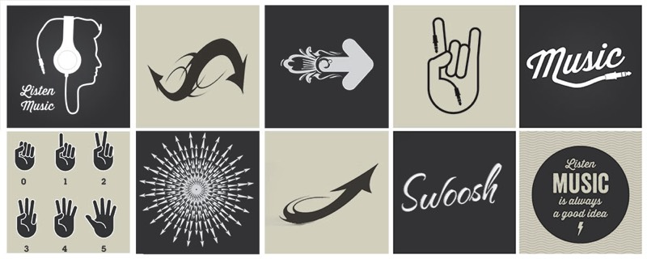
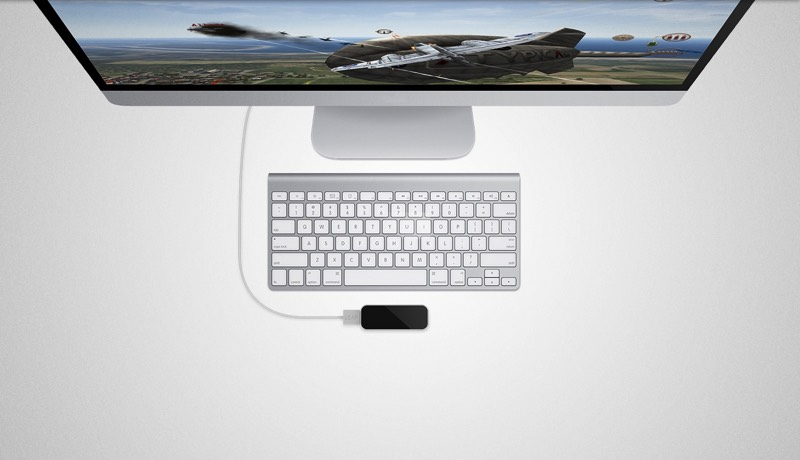
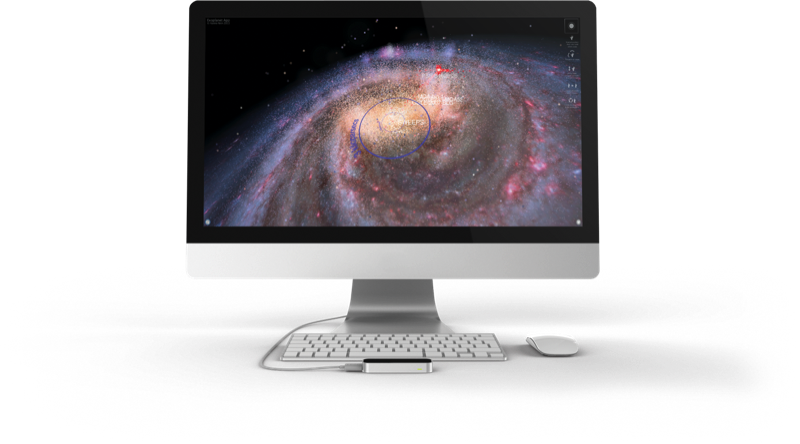

Swoosh
Built for the Launch of the Leap Motion 2013
Tiny device. Huge possibilities. Reach into new Swoosh and control your music in a whole new way. The Leap Motion Controller tracks both hands and all 10 fingers with incredible speed – so you can play, perform, and jam without touching anything.

Swoosh is an iTunes performance companion. Dump the dull iTunes music experience for more hands-on fun. Swoosh simulates vinyl control with that vintage pitch sound. Intuitively reach in to control track playback, audio effects and looping. A multiplayer, multi hand experience that was specifically designed for the Leap Motion Controller. Listen, music is always a good idea, so leap in.
Reach into new Swoosh and control your music in a whole new way. The Leap Motion Controller tracks both hands and all 10 fingers with incredible speed – so you can play, perform, and jam without touching anything.
Precise, fingertip control of pitch, and reverberation Set up to two queue points for custom loops
Promotional Demo
In App


Audio Pitch Control
Stop Start Track
Reverb
Looper
Hot Cues
iTunes Library Loader

Screen Shots

{kind=link}
{kind=link}
{kind=link}
{kind=link}
{kind=link}
Available Now

Reviews
...The app leaves it up to the user to explore this new world and find the pockets of interaction for themselves. Swoosh utilizes the entire gamut of natural movements to create an experience that grows as your skills evolve. The more you use the app the more you'll find your hands egging you towards the view of the Leap Motion Controller wanting to play in this new musical playground. There's a slight learning curve but highly addictive once you've been hooked in by the syncopated beats of Swoosh.
Kiwi Leap Motion User
…Check it!
Andrew Miller Ex Apple VP, Leap Motion CTO
...Definitely for someone who knows what they're doing but this is definitely Minority Report for DJ'sAngelsomething Leap Motion User
...Great application which lets you touch and spin your itunes music (without leaving a smudge). Next level music player!Leap Motion User luku
What's New Version 1.0.2
- Added 10.7 support
- Video tutorial is now built into the application
- Fullscreen mode on launch
- Fixed audio effects positions
- Performance fix with more than one hand
- Added iTunes note when no tracks are playing in iTunes
- Bug fixes